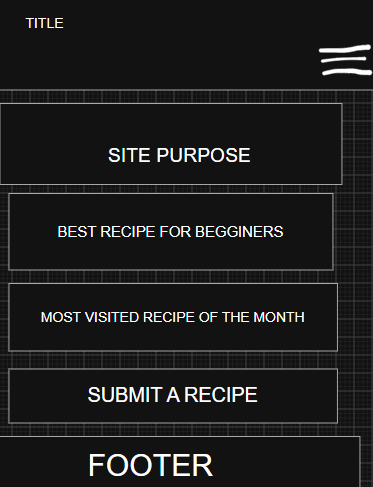
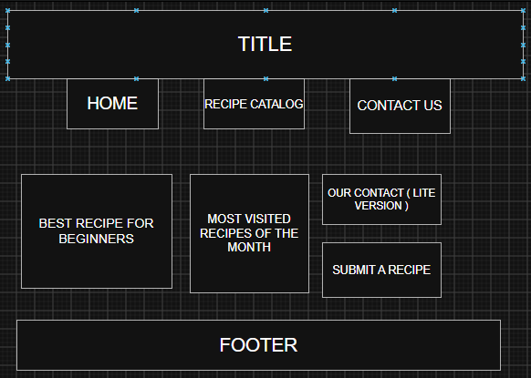

Site Name
Pot & Pantry
The name combines cooking (the pot) with ingredients on hand (the pantry). It tells visitors the site is about everyday home cooking and is short and easy to remember.
Optional domain availability: potandpantry.com
Site Purpose
Pot & Pantry is a recipe catalog where visitors can browse, filter and save recipes. The site has three pages: a home page with featured recipes, a catalog page that loads at least 15 recipes from a JSON file, and a contact page with a form for sending recipe suggestions. Each recipe shows an image, category, preparation time, difficulty and ingredients, and opens in an accessible modal with full details. Visitors can mark favorites, which are stored in the browser.
Scenarios
- What can I cook for dinner in under 30 minutes?
- Which recipes are good for beginners?
- How do I save the recipes I want to try again later?
- How can I suggest a recipe to the site?
Color Scheme
| Color | Hex | Where it is used |
|---|---|---|
| Herb green | #2F5D3A | Header and footer backgrounds, main headings, table headers |
| Saffron | #E8A33D | Accents: underlines, borders, buttons on hover |
| Tomato | #C8432B | Links, subheadings, call-to-action buttons |
| Light sage | #F5F7F2 | Page background and text on dark areas |
| Dark ink | #1E2A22 | Paragraph text and footer |
Typography
Bitter (serif, 600 and 700)
Used for the site name, page titles and all headings. It feels warm and readable, like a printed cookbook.
Nunito Sans (sans-serif, 400 and 700)
Used for body text, navigation, recipe details, ingredient lists and form labels. It is clean and easy to read on small screens.
Wireframe
Black and white sketches of the home page. The small view stacks everything in one column with a hamburger menu. The large view uses a horizontal navigation bar and a three-column grid of recipe cards.

